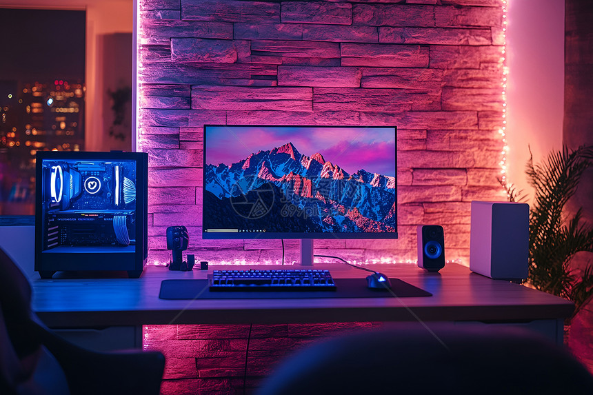

TechGear AU Blog
New Wireless Charger Range Launched - 15th October 2024
We’re excited to introduce our new ChargePad 3-in-1 range! Now charge your phone, smartwatch, and earbuds simultaneously with 15W fast charging. Eco-friendly materials and a sleek design make it the perfect desk accessory. Shop now with 10% off your first order!

How to Choose the Right Gaming PC in 2024 - 5th October 2024
With so many options on the market, picking a gaming PC can be overwhelming. Our tech experts break down key factors: GPU performance, RAM requirements, storage type, and budget. Whether you’re a casual gamer or pro, we’ve got tips to find your perfect match.
TechGear AU Partners with Samsung for Exclusive Discounts - 25th September 2024
We’re thrilled to announce our new partnership with Samsung! Enjoy exclusive discounts on Samsung tablets, monitors, and SSDs when you shop with TechGear AU. Plus, get free extended warranties on all Samsung products purchased before 31st December 2024.